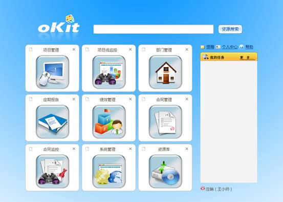
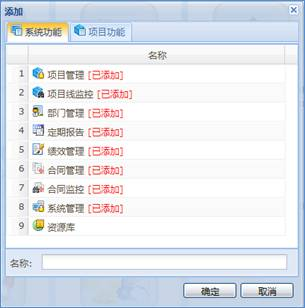

用人员管理模块中创建的用户账户登录前台，前台主页如下图所示，包括九宫格、侧边栏。其中九宫格中显示了模块的快捷方式。侧边栏有任务、信箱、个人中心、帮助四个功能，它们的作用是方便用户查看自己的任务；查看信箱的邮件；查看个人信息、工作记录、下载需要的软件；打开或下载阅读用户说明文档。侧边栏的下面注销按钮，它的作用是退出登录。

图 项目管理系统主界面
点击九宫格上的图标“+”可以将系统功能或项目功能添加为快捷方式，点图标“x”可以删除快捷方式，如下图所示。系统功能是用户在后台被授予的权限，项目功能是项目创建者授予用户的权限。快捷方式添加成功后，可以通过快捷方式访问系统功能或项目功能的模块。

图 添加快捷方式